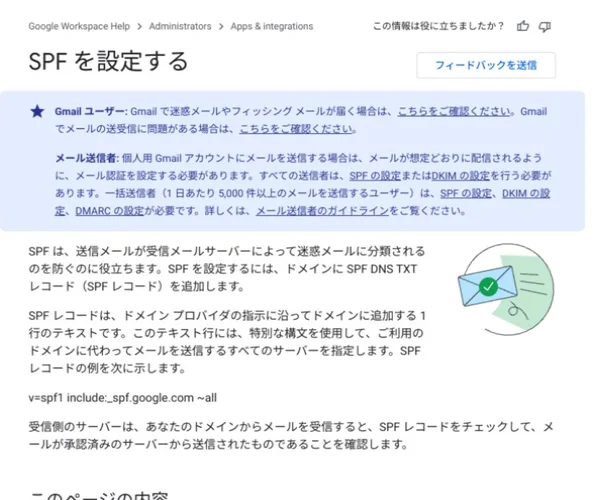

メールの送受信ができるようになって、開業準備が一つ片づいたと思っていました。念のため、普段使っている別のメールアドレス宛てに事務所から一通送ってみたところ、受信箱には見当たらず、迷惑メールフォルダに入っていました。
相手に届いてはいる。ただ、読まれない場所に届いていた。開業の案内をこのアドレスから出すつもりだったので、ここで止まって設定をやり直したのは正解だったと思います。SPF・DKIM・DMARCという三つの設定を入れるまでの記録です。

三つの略語を、自分の言葉に置き換えた
SPF、DKIM、DMARC。どれも似たような場所に設定するので、最初は同じことを三回やっているように見えました。腑に落ちなかったので、自分なりに言い換えてから作業しました。
SPFは、このドメインの名前で手紙を出してよい郵便局の名簿です。名簿にない場所から出された手紙は怪しい、と判断できるようになります。DKIMは封印です。途中で中身を差し替えられていないことを、受け取った側が確かめられます。そしてDMARCは、名簿にも封印にも合わない手紙が届いたときに、受け取り側へ「こう扱ってください」と伝える指示書で、同時に「そういう手紙が何通来たか報告してください」とお願いする仕組みでもあります。
守っている場所が違う、と分かってからは、三つとも入れる意味が納得できました。
設定する前に、送信元を数えた
作業の順番として、最初にやったのはDNSを開くことではなく、紙に書き出すことでした。自分のドメイン名で外へメールが出ていく場所が、Gmailだけとは限らないからです。
ホームページの問い合わせフォームは、外部のサービス経由で自動返信と通知を飛ばします。今後、請求書の送付やメール配信のサービスを使えば、そこも送信元になります。この棚卸しを飛ばしてSPFを書くと、後から追加したサービスのメールだけが静かに落ちる、という事故が起きます。数えてから設定する、という順番はここでは重要でした。
順番を守る。DMARCは最後
SPFとDKIMを先に入れて、実際の送信が通っているかを確かめてから、最後にDMARCを追加しました。逆にすると、認証がまだ整っていない状態で「失敗した手紙は捨ててください」と宣言することになり、自分の正規のメールを自分で止めてしまいます。
DMARCの方針も、いきなり厳しくしていません。今は監視だけの設定にして、レポートが自分の窓口アドレスへ届くようにしてあります。まず観測して、正規の送信元が全部通っていることを確かめてから、段階的に強くする。ここは急いでも良いことがない部分だと考えています。
なお、実際に入っている値のうち、公開されているDNSを見れば誰でも確認できる範囲は次のとおりです。Googleのメールサーバーを送信元として許可するSPF、google というセレクタで公開しているDKIMの鍵、そして監視の段階にあるDMARCの方針とレポートの宛先です。一方で、管理画面のログイン情報、DKIMの秘密鍵、復旧用の情報は、記事にも作業メモにも残していません。
DNSを触るのが、いちばん怖かった
設定作業そのものより緊張したのが、DNSの整理です。使っていない確認用のレコードが一行残っていたので消したのですが、その前に手が止まりました。
DNSは、ホームページの表示先も、メールの配送先も、所有権の確認も、認証の鍵も、全部同じ画面に並んでいます。見慣れない行を「たぶん要らない」でまとめて消すと、ホームページとメールが同時に止まります。しかも止まったことに気づくのは、たいてい誰かから連絡が来たときです。
結局、一行ずつ何のための行かを確認し、消す前の値を控えてから作業しました。反映にも時間差があるので、直後に一度見て「大丈夫そうだ」と判断せず、しばらく置いてから別の回線と別のメールアドレスで確かめています。
フォームは「送信できた」で安心しない
もう一つ、自分への戒めとして書いておきます。問い合わせフォームは、送信ボタンを押して完了画面が出ても、それは「届いた」証拠にはなりません。外部のフォームサービスには、最初に届く確認メールのリンクを踏むまで本稼働しないものがあり、気づかないと二件目以降が黙って消えます。
送信できたか、自動返信が返ってくるか、自分の受信箱に通知が来るか、それが迷惑メールに入っていないか。ここまでを一続きで試して、初めて問い合わせを受けられる状態になります。開業前に気づけたのは運が良かっただけで、開業後に気づいていたら、消えた問い合わせの数すら分かりませんでした。
今の状態
三つの設定を入れ直したあと、外部宛てのテストは認証を通り、迷惑メールフォルダにも入らなくなりました。ここまでが、開業前に済ませたメール周りの作業です。
設定は入れて終わりではなく、サービスを一つ増やすたびに送信元の一覧とDNSを見直すことになります。増やしたときに見直す、という運用のほうが本体だと思っています。
この経験を、お客様の相談にどう返すか
メール認証そのものは、ドメインやメールサービスの管理領域です。ただ、労務のバックオフィスは、勤怠、給与、問い合わせ、書類の受け渡しがつながって初めて回ります。どのツールを使い、誰が受け取り、どこで止まると業務が止まるのか。その全体を見て整理するのが当事務所の仕事です。技術的な設定が必要な部分は、各サービスの窓口や専門の事業者につなぐ形で切り分けています。